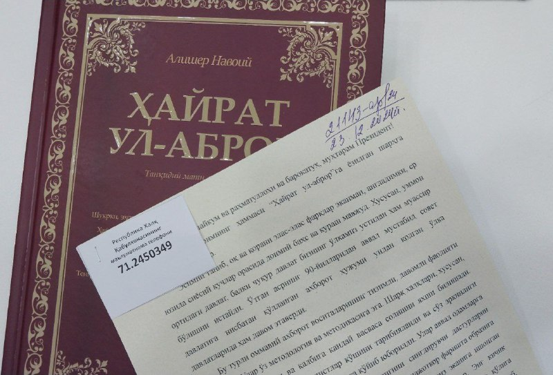

Ёзадиганларимнинг ҳаммаси “Ҳайрат ул-аброр”га ёзилган шарҳга бевосита алоқадор.

Ёзадиганларимнинг ҳаммаси “Ҳайрат ул-аброр”га ёзилган шарҳга бевосита алоқадор.
Эсимни таниб, оқ ва қорани элас-элас фарқлар эканман, англадимки, ер юзида сиёсий кучлар орасида доимий баҳс ва кураш мавжуд. Хусусан, уммон ортидаги давлат, балки чуқур давлат бизнинг ўлкамиз устидан ҳам муассир бўлишни истайди. Ўтган асрнинг 90-йилларидан аввал мустабид совет давлатига нисбатан қўлланган ахборот ҳужуми ундан қолган ўлка давлатларида ҳам давом этаверди.
Бу турли оммавий ахборот воситаларининг тизимли, давомли фаолияти демакдир. Улар ўз методология ва методикасига эга. Шарқ халқлари, хусусан, Туркистон эли ақли ва қалбига қандай васваса солишни яхши билишади. Ғоявий қуролланган журналистлар қўшини тарибияланди ва сўз эркинлиги деб аталган паранжи остида ичкарига қўйиб юборилди. Улар аввал одамларга ҳаёт ва сиёсатнинг манфур ва мудҳишлигини сингдирувчи дастурларни муттасил тақдим этишди, сўнг инсонлар наздида нажоткор фаришта образига киришди, ҳақиқатан ҳам турмуши ўта ғариб ва бахтсиз эканига ишонган одамлар уларга қурол бўлиб хизмат қилишни бошладилар. Энг кичик муаммодан тортиб давлат миқёсидаги сиқинтиларгача уларнинг қўлига сизиб бориш босқичига қадам қўйилди. Улар одамларни мафкуравий қашшоқлаштириб, умидсизлик комига ташладилар. Мустамлакадан чиққан кишиларни зулматда яшаётганларига ишонтирдилар. Бу ишонч йўқолиб қолмаслиги учун ҳозир ҳам тегирмонларини айлантирмоқдалар.